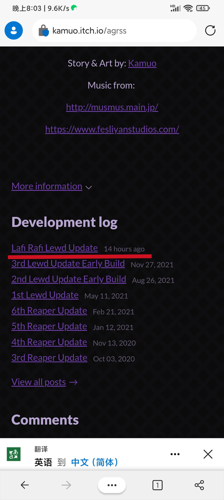
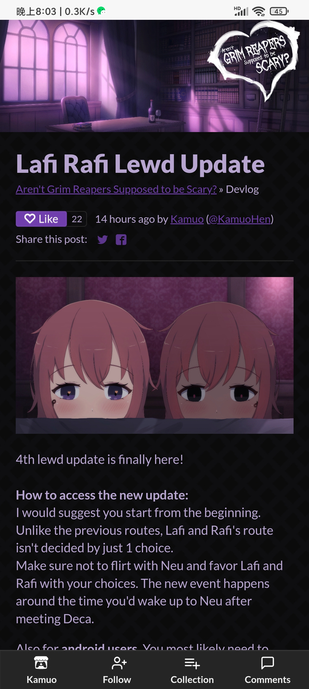
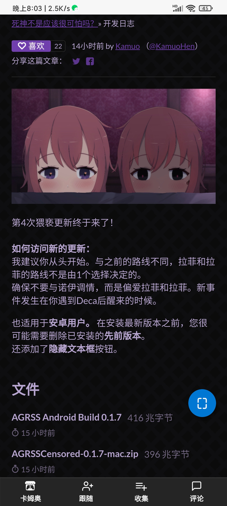

就在十四个小时前，死神哪有那么可爱的第四次lewd更新啦！ - - - - - - - - - - - - - -
看的出来，是拉菲尔(Lafi)和阿菲亚(Rafi)的更新呢 以下提供内容的网页翻译 未进行更新讲解，内容自己体验，我也还没玩，另外，上两次susui和mykka的更新其实不尽人意，起码对我来说，少了唯美的感觉，有空我体验了会发在通讲中的~   
本贴是2022.4.11版
历史版（累计有阅读数：0、点赞数：0、回复数：0）：